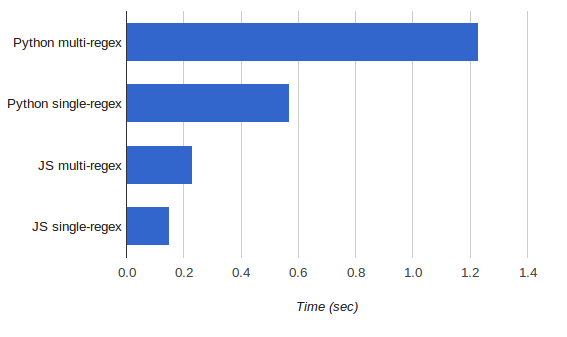

When I need a lexical analyzer, usually the first tool I turn to is a simple regex-based lexer I've been using for a few years now. Here is the most straightforward version, in Python. First, a couple of supporting classes:
class Token(object):
""" A simple Token structure. Token type, value and position.
"""
def __init__(self, type, val, pos):
self.type = type
self.val = val
self.pos = pos
def __str__(self):
return '%s(%s) at %s' % (self.type, self.val, self.pos)
class LexerError(Exception):
def __init__(self, pos):
self.pos = pos
Now, the lexer itself:
class Lexer(object):
""" A simple regex-based lexer/tokenizer.
"""
def __init__(self, rules, skip_whitespace=True):
""" Create a lexer.
rules:
A list of rules. Each rule is a `regex, type`
pair, where `regex` is the regular expression used
to recognize the token and `type` is the type
of the token to return when it's recognized.
skip_whitespace:
If True, whitespace (\s+) will be skipped and not
reported by the lexer. Otherwise, you have to
specify your rules for whitespace, or it will be
flagged as an error.
"""
self.rules = []
for regex, type in rules:
self.rules.append((re.compile(regex), type))
self.skip_whitespace = skip_whitespace
self.re_ws_skip = re.compile('\S')
def input(self, buf):
""" Initialize the lexer with a buffer as input.
"""
self.buf = buf
self.pos = 0
def token(self):
""" Return the next token (a Token object) found in the
input buffer. None is returned if the end of the
buffer was reached.
In case of a lexing error (the current chunk of the
buffer matches no rule), a LexerError is raised with
the position of the error.
"""
if self.pos >= len(self.buf):
return None
if self.skip_whitespace:
m = self.re_ws_skip.search(self.buf, self.pos)
if m:
self.pos = m.start()
else:
return None
for regex, type in self.rules:
m = regex.match(self.buf, self.pos)
if m:
tok = Token(type, m.group(), self.pos)
self.pos = m.end()
return tok
# if we're here, no rule matched
raise LexerError(self.pos)
def tokens(self):
""" Returns an iterator to the tokens found in the buffer.
"""
while 1:
tok = self.token()
if tok is None: break
yield tok
The code is well-commented and self explanatory, but in general the approach is: get a bunch of regular expressions, try to match each - the first one that matches is the triggered "rule", so a token can be returned. It's really straightforward code. Sample usage:
rules = [
('\d+', 'NUMBER'),
('[a-zA-Z_]\w*', 'IDENTIFIER'),
('\+', 'PLUS'),
('\-', 'MINUS'),
('\*', 'MULTIPLY'),
('\/', 'DIVIDE'),
('\(', 'LP'),
('\)', 'RP'),
('=', 'EQUALS'),
]
lx = Lexer(rules, skip_whitespace=True)
lx.input('erw = _abc + 12*(R4-623902) ')
try:
for tok in lx.tokens():
print(tok)
except LexerError as err:
print('LexerError at position %s' % err.pos)
Shortly after I started using it, it was suggested that combining all the regexes into a single regex with alternation (the | regex syntax) and using named groups to know which one matched would make the lexer faster. Here are the methods of Lexer that need to change in order to implement that:
def __init__(self, rules, skip_whitespace=True):
""" Create a lexer.
rules:
A list of rules. Each rule is a `regex, type`
pair, where `regex` is the regular expression used
to recognize the token and `type` is the type
of the token to return when it's recognized.
skip_whitespace:
If True, whitespace (\s+) will be skipped and not
reported by the lexer. Otherwise, you have to
specify your rules for whitespace, or it will be
flagged as an error.
"""
# All the regexes are concatenated into a single one
# with named groups. Since the group names must be valid
# Python identifiers, but the token types used by the
# user are arbitrary strings, we auto-generate the group
# names and map them to token types.
#
idx = 1
regex_parts = []
self.group_type = {}
for regex, type in rules:
groupname = 'GROUP%s' % idx
regex_parts.append('(?P<%s>%s)' % (groupname, regex))
self.group_type[groupname] = type
idx += 1
self.regex = re.compile('|'.join(regex_parts))
self.skip_whitespace = skip_whitespace
self.re_ws_skip = re.compile('\S')
def token(self):
""" Return the next token (a Token object) found in the
input buffer. None is returned if the end of the
buffer was reached.
In case of a lexing error (the current chunk of the
buffer matches no rule), a LexerError is raised with
the position of the error.
"""
if self.pos >= len(self.buf):
return None
else:
if self.skip_whitespace:
m = self.re_ws_skip.search(self.buf, self.pos)
if m:
self.pos = m.start()
else:
return None
m = self.regex.match(self.buf, self.pos)
if m:
groupname = m.lastgroup
tok_type = self.group_type[groupname]
tok = Token(tok_type, m.group(groupname), self.pos)
self.pos = m.end()
return tok
# if we're here, no rule matched
raise LexerError(self.pos)
The re.MatchObject.lastgroup method provides the name of the last group that matched in the regex run, and can be used to efficiently find which rule matched the current token.
This optimization makes the lexer more than twice as fast! Why does this make sense? First, if you think about it in the simplest way possible, the iteration over rules moved from Python code to C code (the implementation of the re module). Second, it's even more than that. In the regex engine, | alternation doesn't simply mean iteration. When the regex is built, all the sub-regexes get combined into a single NFA - some states may be combined, etc. In short, the speedup is not surprising.
A word on my benchmark
My benchmark is pretty simple. I combined a number of TableGen source files into a single one that has ~20 KLOC and weighs around 1 MB; then I wrote down the lexical rules needed to tokenize TableGen and ran the lexer on the whole file. TableGen is a simple programming language, so this is a good simulation of reality.
The first approach, "multi-regex" runs in 1.23 seconds on my machine. The second, "single-regex" runs in 0.57 seconds - 2.15x speedup.
Javascript
Lately I've been playing with Javascript again, so I decided to rewrite my lexer in that language to practice its regular expression handling.
First, the simpler approach that mimics the Python multi-regex lexer:
var Lexer = exports.Lexer = function(rules, skip_ws) {
this.rules = [];
for (var i = 0; i < rules.length; ++i) {
// The regexps are created with '^' since we want to match at
// an exact offset.
this.rules.push({pattern: new RegExp('^' + rules[i].pattern),
name: rules[i].name});
}
this.skip_ws = skip_ws ? new RegExp('\\S', 'g') : null;
this.pos = 0;
this.buf = '';
}
// Initialize the Lexer's buffer. This resets the lexer's internal state and
// subsequent tokens will be returned starting with the beginning of the new
// buffer.
Lexer.prototype.input = function(buf) {
this.buf = buf;
this.pos = 0;
}
// Get the next token from the current buffer. A token is an object with
// the following properties:
// - name: name of the pattern that this token matched (taken from rules).
// - value: actual string value of the token.
// - pos: offset in the current buffer where the token starts.
//
// If there are no more tokens in the buffer, returns null. In case of
// an error throws Error.
Lexer.prototype.token = function() {
// End of input?
if (this.pos >= this.buf.length) {
return null;
}
if (this.skip_ws) {
this.skip_ws.lastIndex = this.pos;
var match = this.skip_ws.exec(this.buf);
if (match) {
this.pos = match.index;
} else {
return null;
}
}
for (var i = 0; i < this.rules.length; ++i) {
var rule = this.rules[i];
var match = rule.pattern.exec(this.buf.substr(this.pos));
if (match) {
var the_token = {name: rule.name, value: match[0], pos: this.pos};
this.pos += match[0].length;
return the_token;
}
}
// If we're here, no rule matches so it's an error.
throw Error('Cannot match a token at position ' + this.pos);
}
Here I ran into a first serious deficiency of JS's regexes. There's no real equivalent to Python's "match at a position" functionality. This manifests differently in two places above:
- Note that the whitespace skipping now has to define a "global" mode regex (with the "g") flag. This is to be able to use lastIndex to tell the regex where to start skipping whitespace from. lastIndex works only for the "global" mode.
- For matching the tokens themselves, the situation is more hairy. I would ideally want to say: match this rule at exactly this position (i.e. it has to start at the position, not later). But Javascript doesn't have that (or at least I didn't find it - feel free to suggest in the comments!), so I had to resort to a trick: first, all rule regexes are defined with a start anchor - ^. Second, the matching itself has to be done on a substring of the buffer, since ^ matches only in the beginning of the buffer. Luckily, Javascript's substr is very efficient so this didn't turn out to be a huge performance problem.
The above limitation made the code a bit more complex than I would've hoped for, but it's not really bad. The performance, on the other hand, is terrific. Running this on a recent version of Node.js (in other words, the V8 engine), it runs in 0.23 seconds, 5.3 times faster than the equivalent Python code and 2.5 times faster than even the optimized single-regex version.
But what about a single-regex version in Javascript. Here it is:
var Lexer = exports.Lexer = function(rules, skip_ws) {
this.rules = rules;
var regex_parts = [];
for (var i = 0; i < rules.length; ++i) {
regex_parts.push('(' + rules[i].pattern + ')');
}
this.regex = new RegExp(regex_parts.join('|'), 'g');
this.skip_ws = skip_ws ? new RegExp('\\S', 'g') : null;
this.buf = '';
}
// Initialize the Lexer's buffer. This resets the lexer's internal state and
// subsequent tokens will be returned starting with the beginning of the new
// buffer.
Lexer.prototype.input = function(buf) {
this.buf = buf;
this.regex.lastIndex = 0;
}
// Get the next token from the current buffer. A token is an object with
// the following properties:
// - name: name of the pattern that this token matched (taken from rules).
// - value: actual string value of the token.
// - pos: offset in the current buffer where the token starts.
//
// If there are no more tokens in the buffer, returns null.
// In case of an error, throws Error.
Lexer.prototype.token = function() {
// End of input?
if (this.regex.lastIndex >= this.buf.length) {
return null;
}
if (this.skip_ws) {
this.skip_ws.lastIndex = this.regex.lastIndex;
var match = this.skip_ws.exec(this.buf);
if (match) {
this.regex.lastIndex = match.index;
} else {
return null;
}
}
var result = this.regex.exec(this.buf);
if (result === null) {
throw Error('Cannot match a token at position ' + this.lexer.lastIndex);
} else {
for (var i = 0; i < this.rules.length; i++) {
// Find the matching rulea SO question
if (result[i + 1] !== undefined) {
return {name: this.rules[i].name,
value: result[0], pos: result.index};
}
}
// Shouldn't get here, because at least one rule matched.
throw Error('Internal error');
}
}
You'll notice that the code here bends over backwards to overcome another annoying limitation of JS regexes. There are no named groups, and no way to quickly find out which group matched in a particular run, without stupidly iterating over the results array! I was very surprised when I found this, and even asked a SO question, where I was told that this is the way things are.
The loop over the results object in the end of the token method really bothers me a lot. It's so useless! My benchmark Tablegen tokenizer has ~30 rules, many of which have to be iterated over for each matching token.
The performance, however, still became much better. This lexer runs the full benchmark in 0.15 seconds, 1.5 times faster than the multi-regex one, and 3.8 times faster than the Python equivalent. Note that the speedup here is smaller than the one experienced by the Python version - I attribute it to the silly result looping :-)
Conclusion
This lexer turned out to be a good exercise of the language's regex capabilities. Back in the day, it helped me learn some tricks in the original Python implementation (such as optimizing regexes by combining them into a single one, and also named groups). It also made me run into a couple of deficiencies of JS's regex handling when I was porting the code. And to run into a deficiency you really need to scour the docs and examples carefully making sure you're not missing anything. As I mentioned above already - I'm very interested in feedback - if anything can be done differently, please let me know.
Also, the performance comparison was interesting. Here it is again, in more graphical form:
There's no doubt that the popularity of Javascript has paid off. Huge efforts were spent by hordes of smart programmers paid to optimize Javascript and the results are obvious. Even in a benchmark where one wouldn't expect the difference between languages to be large - because it's mostly a regex workload, and regexes are presumably implemented similarly deep down in the C/C++ layer - Javascript V8 effortlessly blows (C)Python out of the water.